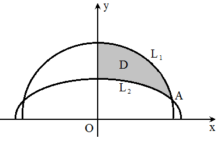
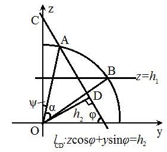

二重积分换序的 Fubini 定理
`n` 维球的体积与表面积 `V_n(R) = (pi R^2)^(n/2)/(Gamma(n/2+1))`, `quad S_n(R) = V_n'(R) = n/R (pi R^2)^(n/2)/(Gamma(n/2+1))`. 有趣的是, 偶数维单位球体体积之和 `sum_(n ge 1) V_(2n)(1)` `= sum_(n ge 1) pi^n/(n!)` `= "e"^pi-1`.
用归纳法. `n = 2` 时 `V_2(R) = pi R^2`, `S_2(R) = 2 pi R`, 结论成立. 假设结论对正整数 `n ge 2` 成立, 考察 `n+1` 的情形: `V_(n+1)(R) = int_(-R)^R V_n(sqrt(R^2-x^2)) dx` `= pi^(n/2)/(Gamma(n/2+1)) int_(-R)^R (R^2-x^2)^(n/2) dx` (令 `t = (R+x)/(2R)`) `= pi^(n/2)/(Gamma(n/2+1)) (2R)^(n+1) int_0^1 t^(n/2) (1-t)^(n/2) dt` `= pi^(n/2)/(Gamma(n/2+1)) (2R)^(n+1) B(n/2+1, n/2+1)` `= pi^(n/2) (2R)^(n+1) (Gamma(n/2+1))/(Gamma(n+2))` `= (pi R^2)^((n+1)/2)/(Gamma(n/2+3/2))`. 最后一个等号用到了 Legendre 倍元公式.
取 `n` 维球坐标
`x_1 = r sin theta_1`,
`x_2 = r cos theta_1 sin theta_2`,
`cdots`,
`x_(n-1) = r cos theta_1 cdots cos theta_(n-2) sin
theta_(n-1)`,
`x_n = r cos theta_1 cdots cos theta_(n-2) cos theta_(n-1)`.
其 Jacobi 行列式
`J = |
sin{:theta_1:}, r cos{:theta_1:}, , ;
cos theta_1 sin{:theta_2:}, -r sin theta_1 sin{:theta_2:}, r cos theta_1 cos{:theta_2:}, ;
vdots, vdots, , ;
cos theta_1 cdots cos theta_(n-2) sin{:theta_(n-1):},
-r sin theta_1 cos theta_2 cdots sin{:theta_(n-1):},
cdots, r cos theta_1 cdots cos{:theta_(n-1):};
cos theta_1 cdots cos{:theta_(n-1):},
-r sin theta_1 cos theta_2 cdots cos{:theta_(n-1):},
cdots, -r cos theta_1 cdots sin{:theta_(n-1):}
|`
??
设有一球心位于原点, 半径为 `R` 的球面. 两平面 `alpha, beta` 相交于直线 `l`, 它们到原点的距离分别为 `h_1, h_2`. (`0 lt h_1, h_2 lt R`), 它们与球面分别相交于圆 `O_1, O_2`, 这两圆的半径分别为 `r_1, r_2`. 记 `angle O_1 O O_2 = varphi`. 现假设这两平面将球面分为四部分, 求与原点相对的那部分的球面面积 ("相对" 是指, 该部分球面与原点既在 `alpha` 的异侧, 又在 `beta` 异侧).
我们先解决这个问题的一个特殊情形:
在中令 `h_2 = 0`, 这时记 `alpha, beta` 所成的锐二面角为 `varphi`, 其他条件不变, 求与原点相对的那部分球面的面积.
为了保证 `alpha, beta` 能将球面分成四部分, `h_1, R, varphi` 应满足关系
`h_1 lt R sin varphi`.
我们取过球心, 且平行于 `alpha` 的平面为 `xOy` 平面, 以 `l`
的一个方向为 `x` 轴正方向, 使得 `l` 落在第一, 二卦限中,
建立直角坐标系. 将所求曲面的一半投影到 `xOy` 平面 ()

所得的平面区域 `D`
由 `y` 轴, `L_1: y = sqrt(r_1^2 - x^2)`, `L_2: x^2 + y^2 sec^2 varphi
= R^2` 围成 (联立 `x^2 + y^2 + z^2 = R^2` 与 `z = y tan varphi`, 消去
`z` 就得到 `L_2` 的方程).
换成极坐标, 即
`L_1: rho = r_1`,
`L_2: rho^2 cos^2 theta + rho^2 sin^2 theta sec^2 varphi = R^2`.
联立两式, 得到两曲线交点对应的弧度值
`theta_A`
`= arcsin{:(h_1 cot varphi)/r_1:}`
`= arccos{:sqrt(r_1^2-h_1^2 cot^2 varphi)/r_1:}`
`= arccos{:sqrt(r_1^2 sin^2 varphi - h_1^2 cos^2 varphi)/(r_1 sin
varphi):}`
`= arccos{:sqrt(r_1^2 - R^2 cos^2 varphi)/(r_1 sin varphi):}`.
又设
`rho_0 = (R cos varphi)/sqrt(1-sin^2 varphi cos^2 theta)`,
于是换元后所得区域 `E` 表示为
`E: {
rho_0 le rho le r_1;
theta_A le theta le pi/2;
:}`
所求曲面的面积为
`S = 2 iint_D sqrt(1 + z_x^2 + z_y^2) dx dy`
`= 2 iint_D sqrt(1 + x^2/z^2 + y^2/z^2) dx dy`
`= 2R iint_D (dx dy)/sqrt(R^2 - x^2 - y^2)`
`= 2R iint_E (rho "d"rho "d" theta)/sqrt(R^2 - rho^2)`
`= -R int_(theta_A)^(pi/2) "d"theta int_(rho_0)^(r_1)
("d"(R^2-rho^2))/sqrt(R^2-rho^2)`
`= 2R int_(theta_A)^(pi/2) (sqrt(R^2-rho_0^2) - h_1)"d" theta`.
因为
`sqrt(R^2-rho_0^2)`
`= R sqrt(1- (cos^2 varphi)/(1-sin^2 varphi cos^2 theta))`
`= (R sin varphi sin theta)/sqrt(1-sin^2 varphi cos^2 theta)`,
所以
`int_(theta_A)^(pi/2) sqrt(R^2-rho_0^2) "d"theta`
`= R int_(pi/2)^(theta_A) ("d" (sin varphi cos
theta))/sqrt(1-sin^2 varphi cos^2 theta)`
`= R [arcsin (sin varphi cos theta)]_(pi/2)^(theta_A)`
`= R arcsin sqrt(1-((R cos varphi)/r_1)^2)`
`= R arccos {:(R cos varphi)/r_1:}`.
最终
`S = 2R[R arccos{:(R cos varphi)/r_1:} - h_1(pi/2-theta_A)]`
`= 2R(R arccos {:(R cos varphi)/r_1:} - h_1 arccos{:(h_1 cot
varphi)/r_1:})`.
在中,
记过椭圆 `L_2` 上顶点的切线与圆 `L_1` 在第一象限交于点 `B`,
如果 `angle AOY = theta_1`, `angle BOY = theta_2`,
我们的结论也可以写成
`S = 2R(R theta_2 - h theta_1)`.
我们引入下面的公式, 从一个特殊情形中验证上面结论的正确性.
以相互平行, 且间距为 `H` 的两平面去截半径为 `R` 的球, 两平面之间所夹的球面片段的面积等于 `2 pi R H`.
这是一个旋转体的侧面积. 以球心为原点, 垂直于这两个平面的方向为 `x`
轴正方向, 建立直角坐标系. 用圆台的侧面积去近似对应于每个 `dx`
的侧面积, 有
`"d"S = pi (sqrt(R^2-x^2) + sqrt(R^2-(x+dx^2))) sqrt(1 +
(dy/dx)^2) dx`
`= 2 pi sqrt(R^2-x^2) R/sqrt(R^2-x^2)`
`= 2 pi R dx`,
`S = int_a^b "d"S = 2 pi R (b-a) = 2 pi R H`.
在中取 `varphi = pi/2`, 则所求面积可以视作由平面 `z = h_1` 和 `z = R` 所夹的球面片段的一半, 从而 `S = pi R (R - h_1)`. 另一方面, 由的结论有: `S = 2R(R * pi/2 - h_1 * pi/2) = pi R(R-h_1)`.
在中, 将平面 `alpha, beta` 分别取为 `z = h_1`, `y = h_2`. 此时 `varphi = pi/2`, 其他条件不变, 求与原点相对的那部分球面的面积.
同样, 为使两平面能将球面分成四部分, 规定 `r_2 gt h_1` (从而 `h_2 lt r_1`). 的解法不再好用. 受上述定理的启发, 我们用垂直于 `z` 轴的平面, 将所求曲面分成许多小曲面, 对每个小曲面应用定理的结论, 有 `"d"S = R gamma(z) dz`, 其中 `gamma(z)` 表示小曲面在柱坐标系下所占的圆心角. 由 `rho^2 + z^2 = R^2` 与 `rho sin theta = h_2` 消去 `rho`, 得 `sin theta = h_2/sqrt(R^2-z^2)`. 不难得到 `gamma(z) = 2 arccos {:h_2/sqrt(R^2-z^2):}`. 于是所求的面积 `S = R int_(h_1)^(r_2) gamma(z) dz` `= 2R int_(h_1)^(r_2) arccos {:h_2/sqrt(R^2-z^2):} dz`. 令 `u = h_2/sqrt(R^2-z^2)`, 则 `z = sqrt(R^2-(h_2/u)^2)`. 分部积分, `S = 2R [sqrt(R^2-(h_2/u)^2) arccos u]_(h_2//r_1)^1` `+ 2R int_(h_2//r_1)^1 sqrt(R^2 - (h_2/u)^2) ("d"u)/sqrt(1-u^2)` `= -2 R h_1 arccos {:h_2/r_1:} + R int_(h_2//r_1)^1 sqrt((R^2 u^2 - h_2^2)/(1-u^2)) ("d"(u^2))/u^2`. 因为 `int sqrt((a^2 x - b^2)/(1-x)) dx/x` (令 `t = sqrt((a^2x-b^2)/(1-x))`, 则 `x = (b^2+t^2)/(a^2+t^2)`, `dx = (2t(a^2-b^2)) / (a^2+t^2)^2 dt`) `= int t * (a^2+t^2) / (b^2+t^2) * (2t(a^2-b^2)) / (a^2+t^2)^2 dt` `= 2 int ( a^2/(a^2 + t^2) - b^2 / (b^2 + t^2) ) dt` `= 2 ( a arctan{:t/a:} - b arctan{:t/b:} ) + C`, 所以 `R int_(h_2//r_1)^1 sqrt((R^2 u^2 - h_2^2)/(1-u^2)) ("d"(u^2))/u^2` `= 2R [R arctan sqrt((u^2 - h_2^2//R^2)/(1-u^2)) - h_2 arctan sqrt((R^2 u^2//h_2^2 - 1)/(1-u^2))]_(h_2//r_1)^1` `= 2R(R "arccot" {:(h_1 h_2)/(R sqrt(r_1^2-h_2^2)):} - h_2 "arccot" {:h_1/sqrt(r_1^2-h_2^2):})` `= 2R(R arccos{:(h_1 h_2)/(r_1 r_2):} - h_2 arccos{:h_1/r_2:})`. 最终 `S = 2R(R arccos{:(h_1 h_2)/(r_1 r_2):} - h_1 arccos{:h_2/r_1:} - h_2 arccos{:h_1/r_2:})`.
类似, 得到 `gamma(z) = 2 arccos{:(h_2 - z cos varphi)/(sin varphi sqrt(R^2 - z^2)):}`. 再联立 `x^2 + y^2 + z^2 = R^2` 和 `y sin varphi + z cos varphi = h_2`, 消去 `y` 得 `z = +-sin varphi sqrt(r_2^2 - x^2) + h_2 cos varphi`. 注意到当 `x = 0`, `z` 取得最大值 `z_(max) = r_2 sin varphi + h_2 cos varphi`. 则原问题化为定积分 `2R int_(r_1)^(z_(max)) arccos {:(h_2 - z cos varphi)/(sin varphi sqrt(R^2-z^2):} dz`.
在 `x` 方向上取微元 `dx`, 这一小块曲面在 `yOz` 平面上投影的半径为
`sqrt(R^2-x^2)`, 下面求圆心角 `alpha(x)`.

如图 , (图中
O 点应为球心在 `yOz` 平面的投影)
`cos angle BOC = h_1/sqrt(R^2-x^2)`,
`quad cos angle AOD = h_2/sqrt(R^2-x^2)`.
所以
`alpha(x) = angle BOC - angle AOC`
`= angle BOC - (varphi - angle AOD)`
`= arccos {:h_1/sqrt(R^2-x^2):} + arccos {:h_2/sqrt(R^2-x^2):} -
varphi`.
设平面 `alpha, beta` 的交线 `l` 被球面截得的长度为 `2x_0`, `|O_1 O_2|
= d`. 联立 `z = h_1`, `x^2 + y^2 + z^2 = R^2` 和 `y sin varphi + z cos
varphi = h_2` 得
`x_0^2 = R^2 - (h_1^2 sin^2 varphi + (h_2 - h_1 cos
varphi)^2)/(sin^2 varphi)`
`= R^2 - (h_1^2 + h_2^2 - 2 h_1 h_2 cos varphi)/(sin^2 varphi)`
`= R^2 - d^2/(sin^2 varphi)`.
所以
`int_0^(x_0) arccos{:h_1/sqrt(R^2-x^2):}dx`
`= x_0 arccos{:(h_1 sin varphi)/d:}`
`+ [R arctan sqrt((u^2 - h_1^2//R^2)/(1-u^2)):}`
`{:- h_1 arctan sqrt((R^2 u^2//h_1^2-1)/(1-u^2))]
_(h_1 // R)^(h_1 sin varphi // d)`
`= x_0 arccos{:(h_1 sin varphi)/d:}
+ R arctan{:(h_1 x_0 sin varphi)/(R sqrt(d^2-h_1^2 sin^2
varphi)):}`
`- h_1 arctan{:(x_0 sin varphi)/sqrt(d^2 - h_1^2 sin^2
varphi):}`
`= x_0 arccos{:(h_1 sin varphi)/d:}
+ R arcsin(x_0/r_1 (h_1 sin varphi)/d)
- h_1 arcsin{:x_0/r_1:}`.
最终
`S = 2R int_0^(x_0) (arccos {:h_1/sqrt(R^2-x^2):}:}`
`{:+ arccos {:h_2/sqrt(R^2-x^2):} - varphi) dx`
`= 2R sum_(i=1,2) (x_0 arccos{:(h_i sin varphi)/d:}:}`
`+ R arcsin(x_0/r_i (h_i sin varphi)/d)`
`{:- h_i arcsin{:x_0/r_i:}) - 2R x_0 varphi`
`= 2R x_0(pi -2varphi) + 2R sum_(i=1,2)
(R arcsin(x_0/r_i (h_i sin varphi)/d)
- h_i arcsin{:x_0/r_i:})`.
其中 `arccos {:(h_i sin varphi)/d:}` 表示直线 `O_1 O_2` 与平面 `3-i`
的夹角; `arcsin{:x_0/r_1:}` 表示圆 `O_i` 的圆心角的一半;
`arcsin(x_0/r_i (h_i sin varphi)/d)` 表示 ??